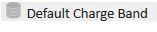
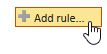
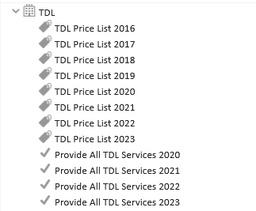
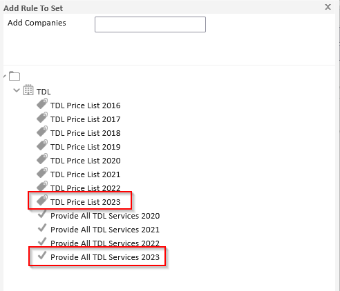
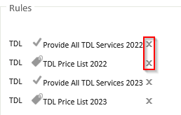
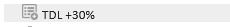
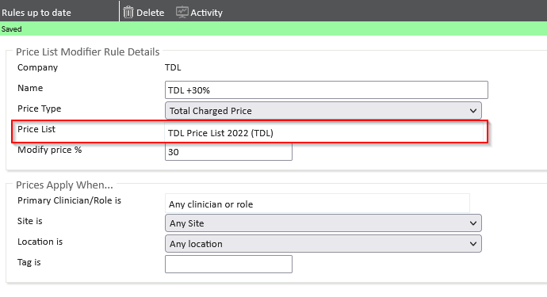
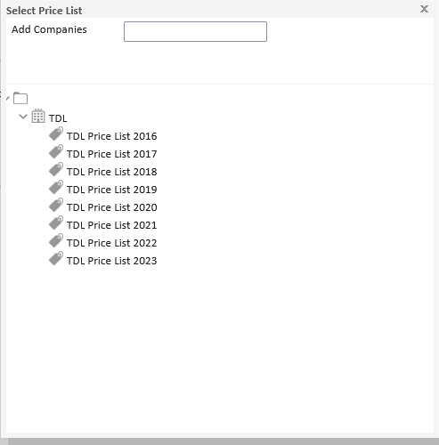
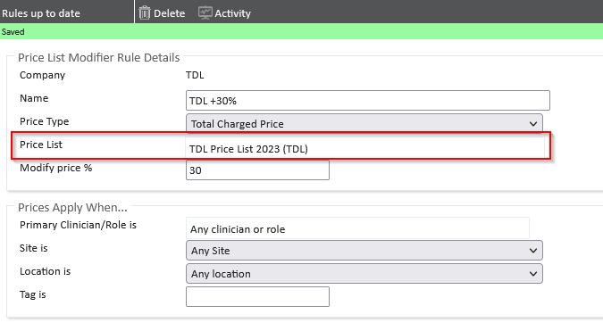

Every year, TDL make changes to their price list. Once this price list is received by us at Meddbase, we import it.
Important to note before starting:
If you are using a Price List Modifier rule to add a percentage mark up to the TDL prices, please navigate through both sections 1 and 2. Ensuring you only add the provide service rule in Section 1 and not the price list.
This article explains how to update your TDL pricelist.
Please note that the examples provided below are that of a demo environment. Your chambers rules may appear different however the method remains the same.





Important to note:
Both the price list and provide service rule are required.
Simply adding the price list will not make these tests available to book, the "provide all service rule" is required to provide all the TDL tests visible on the Pricelist.
If you wish to provide only a select few services, this can be done by creating your own provide service rule and not using the "Provide all services one"
If you wish to provide only a select few TDL tests please refer to the guide linked below: Creating new provide service rule
If you are not applying a mark up to these prices you should be complete with the updating of your TDL prices and services.
Please feel free to contact our support team via a ticket if you experience any difficulties.
This section is only required for chambers applying a mark up to their TDL services.
When using this type of rule, the rule does not need to be removed from any Charge Bands, however, the price list applied to the Price List Modifier Rule needs to be changed.
This can be achieved by:



